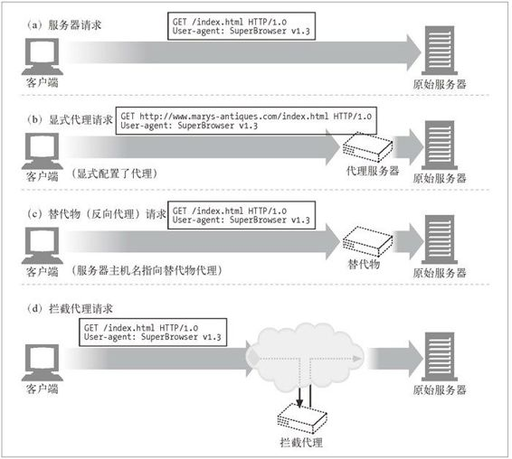
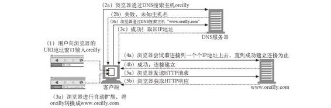
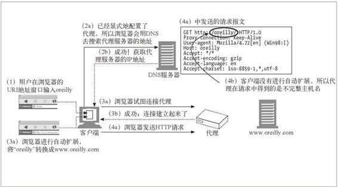
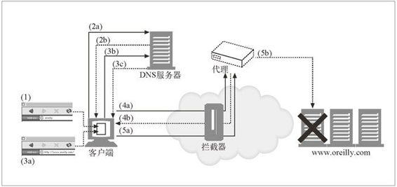

6.5 与代理请求有关的一些棘手问题
本节对与代理服务器请求有关的一些比较棘手且易被误解的问题进行了解释，其中包括：
代理请求中的 URI 和服务器请求中的 URI 有何不同；
拦截和反向代理是如何将服务器主机信息隐藏起来的；
修改 URI 的规则；
代理是怎样影响浏览器的智能 URI 自动完成机制，或主机名扩展特性的。
6.5.1 代理URI与服务器URI的不同
除了一点之外，Web 服务器报文和 Web 代理报文的语法是一样的。客户端向服务器而不是代理发送请求时，HTTP 请求报文中的 URI 会有所不同。
客户端向 Web 服务器发送请求时，请求行中只包含部分 URI（没有方案、主机或端口），如下例所示：
GET /index.html HTTP/1.0
User-Agent: SuperBrowser v1.3
但当客户端向代理发送请求时，请求行中则包含完整的 URI。例如：
GET http://www.marys-antiques.com/index.html HTTP/1.0
User-Agent: SuperBrowser v1.3
为什么会有两种不同的请求格式，一种用于代理，另一种用于服务器呢？在原始的 HTTP 设计中，客户端会直接与单个服务器进行对话。不存在虚拟主机，也没有为代理制定什么规则。单个的服务器都知道自己的主机名和端口，所以，为了避免发送冗余信息，客户端只需发送部分 URI 即可，无需发送方案和主机（以及端口）。
代理出现之后，使用部分 URI 就有问题了。代理需要知道目标服务器的名称，这样它们才能建立自己与服务器的连接。基于代理的网关要知道 URI 的方案才能连接到 FTP 资源和其他方案上去。HTTP/1.0 要求代理请求发送完整的 URI，解决了这个问题，但它为服务器请求保留部分 URI 的形式（已经有相当多的服务器都改为支持完整 URI 了）。1
1 现在，HTTP/1.1 要求服务器为代理请求和服务器请求都提供完整的 URI 处理，但实际上，很多已部署的服务器仍然只接受部分 URI。
因此，我们要将部分 URI 发送给服务器，将完整 URI 发送给代理。在显式地配置客户端代理设置的情况下，客户端就知道要发布哪种类型的请求了。
没有设置客户端使用代理时，它会发送部分 URI（参见图 6-15a）。
设置客户端使用代理时，它会发送完整 URI（参见图 6-15b）。

图 6-15 拦截代理会获取服务器请求
6.5.2 与虚拟主机一样的问题
代理“缺少方案 / 主机 / 端口”的问题与虚拟主机 Web 服务器面临的问题相同。虚拟主机 Web 服务器会在很多 Web 站点间共享同一个物理 Web 服务器。包含部分 URI（比如 /index.html）的请求到达时，虚拟主机 Web 服务器需要知道目的 Web 站点的主机名（更多信息请参见 5.7.1 节和 18.2 节）。
尽管它们出现的问题相似，但解决方法却有所不同：
显式的代理要求在请求报文中使用完整 URI 来解决这个问题；
虚拟主机 Web 服务器要求使用 Host 首部来承载主机和端口信息。
6.5.3 拦截代理会收到部分URI
只要客户端正确地实现了 HTTP，它们就会在请求中包含完整的 URI，发送给经过显式配置的代理。这样解决了部分问题，但还有一个问题：客户端并不总是知道它是在和代理进行对话，因为有些代理对客户端可能是不可见的。即使没有将客户端配置为使用代理，客户端的流量也可能会经过替代物或拦截代理。在这两种情况下，客户端都会认为它在与 Web 服务器进行对话，不会发送完整的 URI。
如前所述，反向代理是一个用来取代原始服务器的代理服务器，它通常会通过假扮服务器的主机名或 IP 地址来做到这一点。它会收到 Web 服务器请求，可能会向真正的服务器提供缓存的响应或者代理请求。客户端无法区分反向代理和 Web 服务器，因此它会发送部分 URI（参见图 6-15c）。
拦截代理是网络流量中的代理服务器，它会拦截从客户端发往服务器的请求，并提供一个缓存响应，或对其进行转发。由于拦截代理拦截了从客户端到服务器的流量，所以它会收到发送给 Web 服务器的部分 URI（参见图 6-15d）。2
2 在某些情况下，拦截代理可能也会拦截客户端到代理的流量，在这种情况下，拦截代理可能会收到完整 URI，并需要对其进行处理。由于显式代理的通信端口通常与 HTTP 使用的端口有所不同（通常是 8080 而不是 80），而且拦截代理通常只对端口 80 进行拦截，所以这种情况并不会经常发生。
6.5.4 代理既可以处理代理请求，也可以处理服务器请求
由于将流量重定向到代理服务器的方式有所不同，通用的代理服务器既应该支持请求报文中的完整 URI，也应该支持部分 URI。如果是显式的代理请求，代理就应该使用完整 URI，如果是 Web 服务器请求，就应该使用部分 URI 和虚拟 Host 首部。
使用完整和部分 URI 的规则如下所示。
如果提供的是完整 URI，代理就应该使用这个完整 URI。
如果提供的是部分 URI，而且有 Host 首部，就应该用 Host 首部来确定原始服务器的名字和端口号。
如果提供的是部分 URI，而且没有 Host 首部，就要用其他方法来确定原始服务器：
如果代理是代表原始服务器的替代物，可以用真实服务器的地址和端口号来配置代理；
如果流量被拦截了，而且拦截者也可以提供原始的 IP 地址和端口，代理就可以使用拦截技术提供的 IP 地址和端口号（参见第 20 章）；
如果所有方法都失败了，代理没有足够的信息来确定原始服务器，就必须返回一条错误报文（通常是建议用户升级到支持 Host 首部的现代浏览器）。3
3 不应该经常这么做。因为用户会收到之前从未收到过的神秘错误页面。
6.5.5 转发过程中对URI的修改
代理服务器要在转发报文时修改请求 URI 的话，需要特别小心。对 URI 的微小修改，甚至是看起来无害的修改，都可能给下游服务器带来一些互操作性问题。
尤其是，现在已知有些代理会在将 URI 转发给下一跳节点之前将 URI“规范”为标准格式。有些看起来无害的转换行为，比如用显式的“:80”来取代默认的 HTTP 端口，或者用适当的换码转义符来取代非法的保留字符以校正 URI，就可能造成互操作性问题。
总之，代理服务器要尽量宽容一些。它们的目标不是成为强制实现严格协议一致性的“协议警察”，因为这样可能会严重破坏之前能正常工作的服务。
特别是，HTTP 规范禁止一般的拦截代理在转发 URI 时重写其绝对路径部分。唯一的例外是可以用“/”来取代空路径。
6.5.6 URI的客户端自动扩展和主机名解析
根据是否有代理，浏览器对请求 URI 的解析会有所不同。没有代理时，浏览器会获取你输入的 URI，尝试着寻找相应的 IP 地址。如果找到了主机名，浏览器会尝试相应的 IP 地址直到获得成功的连接为止。
但是，如果没有找到主机，很多浏览器都会尝试着提供某种主机名自动“扩展”机制，以防用户输入的是主机“简短”的缩写形式（回顾一下 2.3.2 节）。4
4 当你输入 yahoo 时，大多数浏览器都会自动将其扩展为 www.yahoo.com。类似地，浏览器允许用户省略前缀 http://，如果省略了浏览器会自行插入。
很多浏览器会尝试着加入前缀 www. 和后缀 .com，以防用户只输入了常见 Web 站点名的中间部分（比如，人们可以输入 yahoo 而不是 www.yahoo.com）。
有些浏览器甚至会将未解析出来的 URI 传递给第三方站点，这个站点会尝试着校正拼写错误，并给出一些用户可能希望访问的 URI 建议。
而且，大多数系统中的 DNS 配置允许用户只输入主机名的前缀，然后 DNS 会自动搜索域名。如果用户位于域名 oreilly.com 的范围之内，并输入了主机名 host7，DNS 会自动尝试将其与 host7.oreilly.com 进行匹配。这并不是完整有效的主机名。
6.5.7 没有代理时URI的解析
图 6-16 显示了一个在没有代理的情况下，浏览器进行主机名自动扩展的例子。在第(2a) ～ (3c) 步中，浏览器会去查找各种主机名，直到找到一个有效主机名为止。

图 6-16 没有提供显式的代理时，浏览器会对部分主机名进行自动扩展
图中发生的情况如下所示。
在第 (1) 步中，用户向浏览器的 URI 窗口中输入 oreilly。浏览器用 oreilly 作为主机名，并假定默认方案为 http://，默认端口为 80，默认路径为“/”。
在第 (2a) 步中，浏览器会去查找主机 oreilly。查找失败了。
在第 (3a) 步中，浏览器对主机名进行自动扩展，请求 DNS 解析 www.oreilly.com。这次成功了。
然后，浏览器成功地连接 www.oreilly.com。
6.5.8 有显式代理时URI的解析
使用显式代理时，用户的 URI 会被直接发送给代理，所以浏览器就不再执行所有这些便捷的扩展功能了。
如图 6-17 所示，有显式代理时，浏览器没有对不完整的主机名进行自动扩展。因此，当用户在浏览器的地址窗口中输入 oreilly 时，发送给代理的就是 http://oreilly/（浏览器添加了默认方案和路径，但主机名和输入的一样）。

图 6-17 有显式代理时，浏览器不会对不完整主机名进行自动扩展
因此，有些代理会尽力尝试着去模仿浏览器的便捷服务，包括 www...com 自动扩 展，以及添加本地域名后缀。5
5 但对得到广泛共享的代理来说，知道单个用户的正确域名后缀基本上是不可能的。
6.5.9 有拦截代理时URI的解析
使用不可见的拦截代理时，对主机名的解析会略有不同，因为对客户端来说，是没有代理的！这种情况下的行为与使用服务器的情形很类似，浏览器会自动扩展主机名，直到 DNS 成功为止。但如图 6-18 所示，建立到服务器的连接时，有一个很重要的区别。

图 6-18 使用拦截代理时，浏览器无法检测出已停用服务器的 IP 地址
图 6-18 显示了下列事务处理过程。
在第 (1) 步中，用户在浏览器的 URI 地址窗口中输入 oreilly。
在第 (2a) 步中，浏览器通过 DNS 查找主机 oreilly，但 DNS 服务器失败了，并回送响应说明主机未知，如第 (2b) 步所示。
在第 (3a) 步中，浏览器进行了自动扩展，将 oreilly 转换成 www.oreilly.com。在第 (3b) 步中，浏览器通过 DNS 来查找主机 www.oreilly.com。这一次，如第 (3c) 步所示，DNS 服务器成功了，将 IP 地址返回给了浏览器。
在第 (4a) 步中，客户端已经成功解析了主机名，并有了一张 IP 地址列表。有些 IP 地址可能已经停用了，所以，通常客户端会尝试着连接每个 IP 地址，直到成功为止。但对拦截代理来说，第一次连接请求就会被代理服务器拦截成功，不会连接到原始服务器上去。客户端认为它在与 Web 服务器进行成功的对话，但那个 Web 服务器可能甚至都不处于活跃状态。
当代理最终准备好与真正的原始服务器进行交互时［第 (5b) 步］，代理可能会发现那个 IP 地址实际指向的是一个已停用的服务器。为了提供与浏览器相同级别的容错机制，代理可以通过解析 Host 首部的主机名，也可以通过对 IP 地址的反向 DNS 查找来尝试其他 IP 地址。将浏览器配置为使用显式代理时，它们会依赖代理的容错机制，所以对拦截和显式的代理实现来说，在 DNS 解析到已停用服务器时，提供容错机制是很重要的。